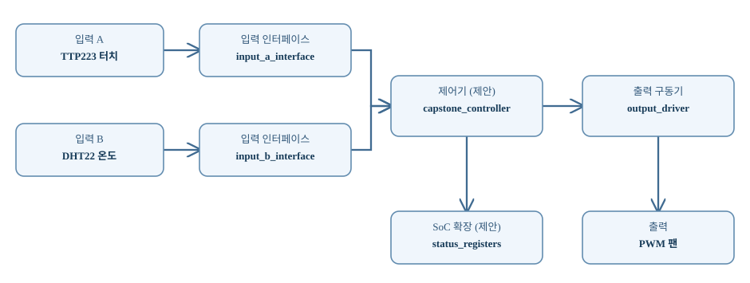

CAPSTONE-19 — 터치 모드·온도 연동 개인용 팬
새로운 자체 캡스톤 설계서 — 실제 통합 RTL·AXI·합성·보드 시험은 미실시.
1. 시스템 구성
2. 동작 정책
터치로 수동·자동 모드를 전환하고 과온 보호와 히스테리시스를 적용한다.
3. 개념 구조 (실제 RTL 포트 아님)

TTP223 터치 → input_a_interface ─┐
DHT22 온도 → input_b_interface ─┤→ capstone_controller → output_driver → PWM 팬
└→ status_registers (MicroBlaze V 확장)
4. 상태 흐름
| 상태 | 역할 |
|---|---|
| IDLE | 안전 출력, 입력 대기 |
| CHECK | 유효값·순서·타임아웃 검사 |
| ACTIVE | 정책 조건 성립 시 출력 |
| HOLD | 유지·재입력 억제 |
| FAULT | 안전 정지 및 오류 래치 |
5. 따라하기 구현 절차
- 데이터시트·전압·핀·구동전류 확인
- 입력 유효/Reset/타임아웃 정의
- Controller/Driver 독립 RTL 설계
- Reset·정상·동시·오류 자기검증 TB 작성
- 필요시 AXI/소프트웨어 연계
- Vivado 합성·Timing·실물 보드 검증
6. 전기적 안전
Basys3 GPIO는 3.3V 기준. HC-SR04 일반형 ECHO 5V 직접 연결 금지; XADC 단극성 입력은 0~1V 범위를 지켜야 한다. 서보·모터·릴레이는 FPGA GPIO에서 전력을 공급하지 않고 외부 전원·구동 회로·공통 접지/절연 조건을 확인한다. I²C 모듈은 칩과 브레이크아웃의 전원·풀업 전압을 각각 확인한다.
7. 검증 상태
설계 문서·HTML 생성 완료. 신규 통합 RTL·C·AXI·시뮬레이션·합성·Timing·보드 시험은 미구현/미실시.